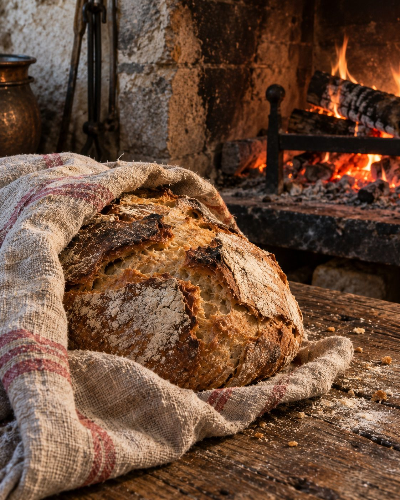
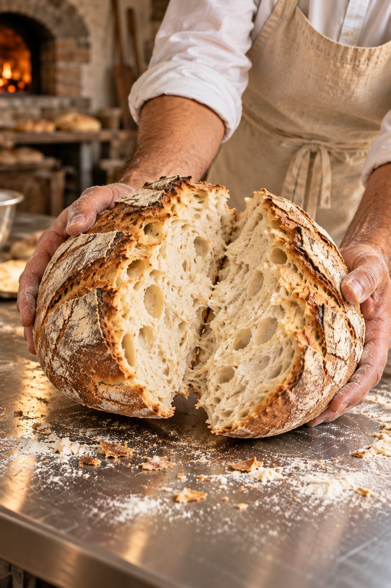
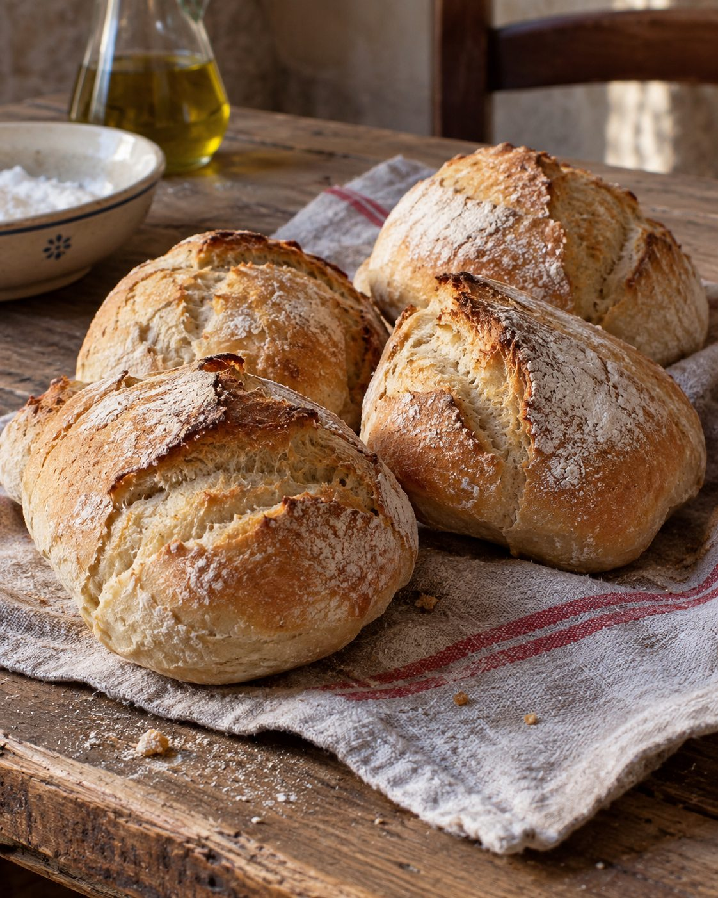
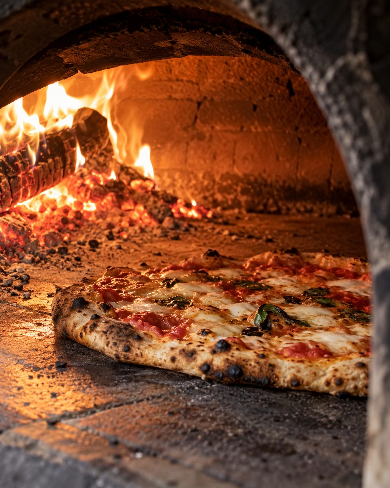
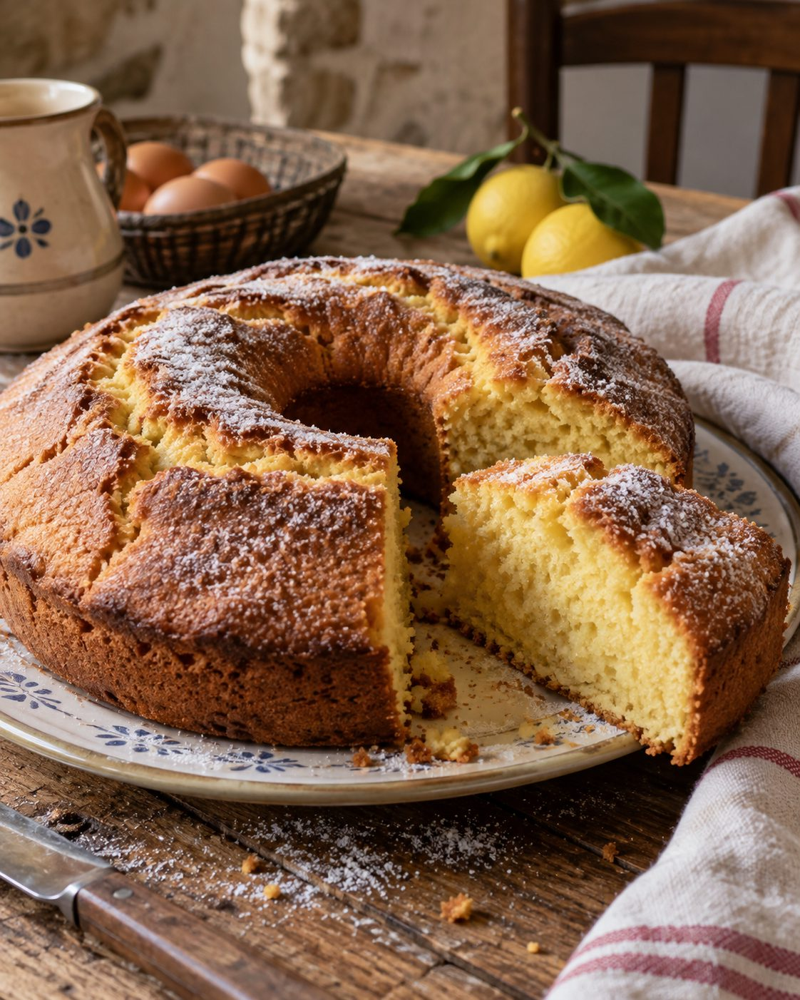
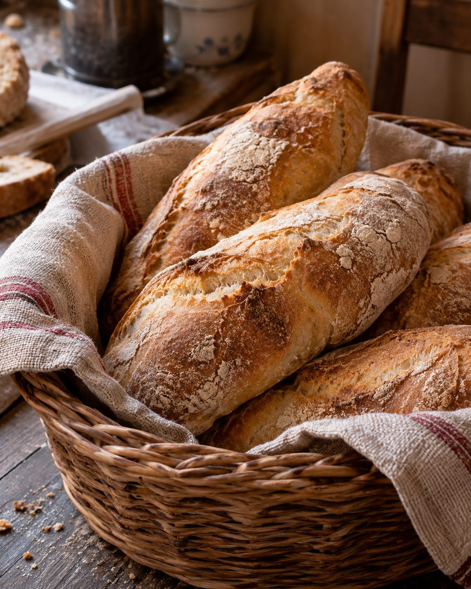
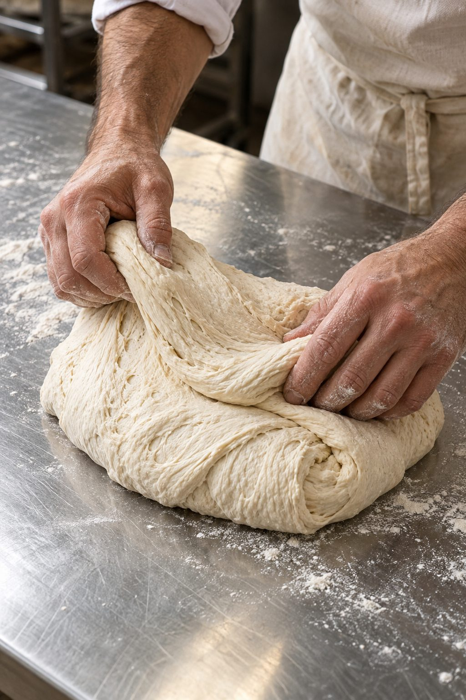

Panetta Danilo · Fornai dal 1968
Panificio di Cerchiara
Biscotti, pasta all'uovo, dolci & pane.
Chi siamo
Dal 1968

Il panificio di Cerchiara nasce nel 1968 nel paese di Cerchiara dalla famiglia Panetta. Ormai da tre generazioni il panificio tramanda, attraverso i propri prodotti, la tradizione dell'arte fornaia cerchiarese in Abruzzo.
Produzione propria
Prodotti tipici della tradizione abruzzese.





Rivendita
Contattaci · 334 8919180
Hai un'attività e vuoi rivendere i nostri prodotti?
Info & ordini
Panificio di Cerchiara
- Indirizzo
- Via del Mulino, Cerchiara (TE)
- Telefono
- 334 8919180
- panetta.social@gmail.com
